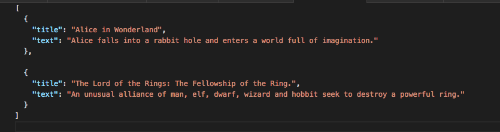

-
Add a File
{{message}}
- {{file}}
INVERTED INDEX
This application makes use of inverted index a type of elastic search algorithm that makes it possible to perform fast full-text search of documents. It get a list of all words in a docuemnt and indexes them by storing the word and where they appear in the document.
Instructions
Follow the instructions written below to use the application
- create a ".json" file that is an array of object in the following format:
- 
- Upload the .json file you wish have created and wish to index.
- The files are supposed to be uploaded one after the other(asynchronously).
- After successful upload of file(s), You can click the create index button for each uploaded file. this creates an index of the clicked file.
- You can search for a word or words by entering a word in the search box provided above and click the search button to search.
| Tokens | {{title}} |
|---|---|
| Items | Doc{{$index + 1}} |
Your feedback is highly appreciated. Send your thoughts and comments to: email
I am a boy ooo